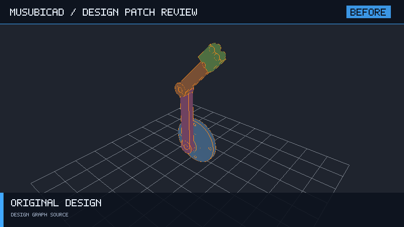
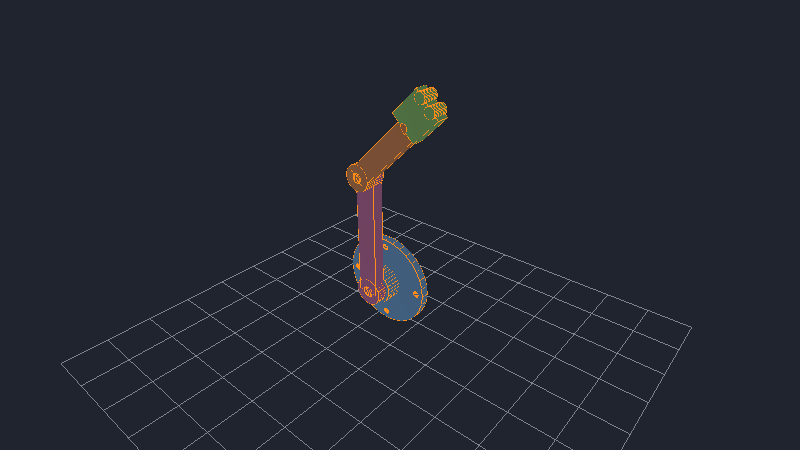
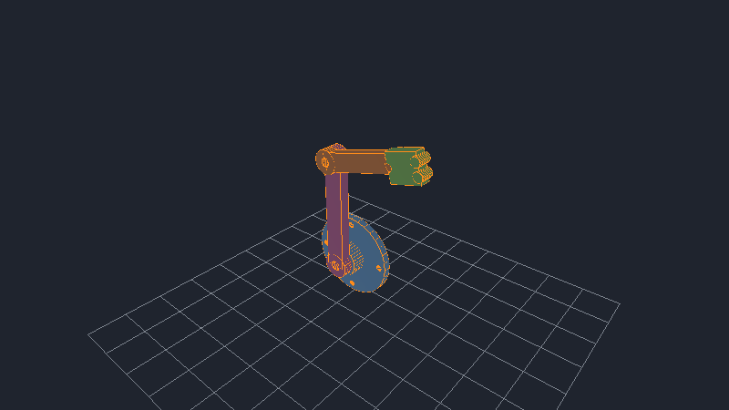

MUSUBICAD DESIGN REVIEW
Repose the articulated arm to reach a lower working height
Rotate the elbow and wrist joints from -45° to -75° about their vertical axes so the gripper sweeps a lower arc, while every concentric mate stays satisfied and the arm remains interference-free.



Semantic and geometric diff
{
"diff_type": "semantic",
"summary": "2 change(s)",
"changes": [
{
"kind": "assembly_instance_changed",
"id": "instance:forearm",
"field": "placement",
"before": "{\"transform\":{\"translation_m\":[0.0,0.16,0.044],\"rotation\":[[0.7071067811865476,0.7071067811865476,0.0],[-0.7071067811865476,0.7071067811865476,0.0],[0.0,0.0,1.0]]}}",
"after": "{\"transform\":{\"translation_m\":[0.0,0.16,0.044],\"rotation\":[[0.25881904510252074,0.9659258262890684,0.0],[-0.9659258262890684,0.25881904510252074,0.0],[0.0,0.0,1.0]]}}"
},
{
"kind": "assembly_instance_changed",
"id": "instance:gripper",
"field": "placement",
"before": "{\"transform\":{\"translation_m\":[0.07778174593052023,0.23778174593052023,0.055999999999999994],\"rotation\":[[0.7071067811865476,0.7071067811865476,0.0],[-0.7071067811865476,0.7071067811865476,0.0],[0.0,0.0,1.0]]}}",
"after": "{\"transform\":{\"translation_m\":[0.1062518408946992,0.188470094965001,0.056],\"rotation\":[[0.25881904510252074,0.9659258262890684,0.0],[-0.9659258262890684,0.25881904510252074,0.0],[0.0,0.0,1.0]]}}"
}
],
"geometry": {
"volume_before": null,
"volume_after": null,
"mass_before": null,
"mass_after": null
}
}